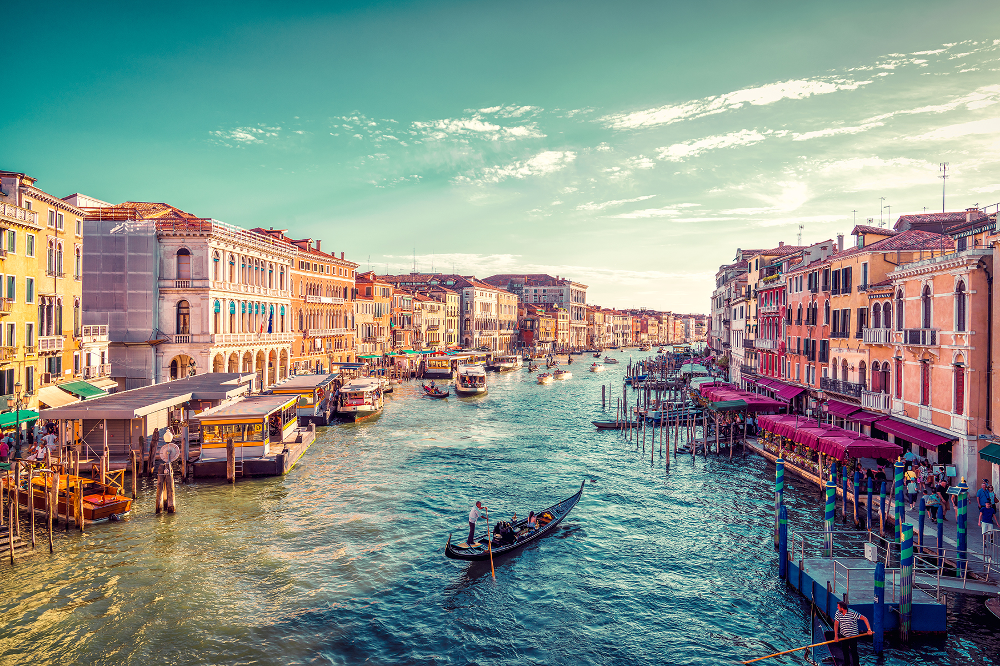
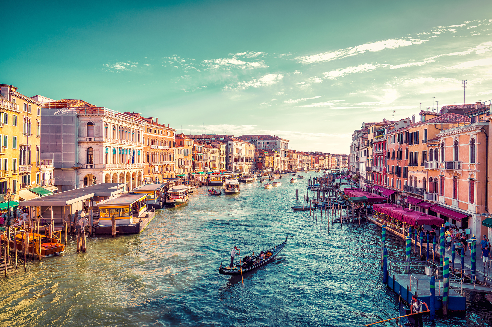

Calatoria - pasiunea tuturor!

Pe primul loc, fara ezitare, este Japonia. Caci Japonia e greu de cuprins in cuvinte. Tot ce imi vine in minte sunt descrierile la superlativ.
Este civilizatia din viitor cladita pe un trecut inca prezent. Pffff, prea multa filozofie, dar asa te simti acolo. Pe strazi, vezi femei in costume
traditionale, iar in magazine iti vorbeste un robot; celebra toaleta japoneza cu prea multe butoane te amuza, caci tu nu prea stii sa o folosesti.
Ca turist ai tot confortul din lume: ajungi din punctul A in punctul B, cat ai spune “banzaai”, mancarea este fabuloasa si te simti in siguranta in
orice loc, fie ca te afli intr-un cartier marginas, fie ca esti intr-un autobuz sau intr-un tren de mare viteza. Si ai ce sa vezi: de la temple
stravechi pana la cladiri futuriste. Si ai ce sa inveti: Japonia este despre respect, valori si disciplina.
______________________________________________________________________________________________

“Tara diminetilor linistite” nu este departe de Japonia, as pune, cumva, semnul egal intre ele, cu mentiunea ca sud-coreenii sunt mai fresh,
mai liberi, mai in ton cu vremurile. Seulul este, poate, cea mai cool capitala asiatica pe care am vizitat-o. Metropola asta ai senzatia ca
nu doarme niciodata, este plina de culoare, este vie, vibreaza. La orice pas, trebuie sa scoti aparatul de fotografiat, caci descoperi un festival,
un templu ori vreo expozitie “de te miri ce” sau vreo straduta cu zeci de magazine, unde, cu greu, te strecori prin marea de oameni. Este un oras
la fel de sigur ca Tokyo sau Osaka. Iti poti lasa portofelul pe o banca si, seara, tot acolo il vei gasi. Caci, coreenii sunt civilizati, atenti
si saritori.
______________________________________________________________________________________________

Farmecul spaniol te cucereste pe loc si vrei sa vezi mai mult. Prima data, am vizitat Barcelona, apoi am vazut Madridul, Malaga, Marbella si
Tenerife. Spania e unica, nu-i asa? Are aerul acela mediteranean, cu aroma de portocale si maslini, cu palmieri la mal de Mediterana, cu cladiri
vechi, impresionante, cu piatete idilice, sosele impecabile, plaje generoase si oameni linistiti. Adica, civilizatia, unde eu as putea trai mult si
bine. Pentru ca este cald, pentru ca au paella si sangria. Pentru ca e Spania.
______________________________________________________________________________________________

Este orasul-tara care m-a lasat cu gura cascata la propriu. Este cosmopolit, curat, verde si, peste toate, civilizat. Ceea ce m-a impresionat, in
Singapore, este ca metropola, pe langa luxul care o defineste, este construita si pentru confortul omului de rand. Blocurile de locuinte au de la
parcari incorporate pana la piscine, terenuri de fotbal cu nocturna si food courturi, unde poti manca bine pentru o suma decenta. Este foarte
curat si aerisit. Ca turist, nu te deranjeaza nimic. Dimpotriva. Ramai uimit si te gandesti cum au ridicat Marina Bay Sands, Gardens by the Bay,
cum au construit insula sintetica – Sentosa – pentru ca singaporezii sa poata face plaja si sa se relaxeze in zilele libere.
______________________________________________________________________________________________

Pentru mine, Thailanda inseamna “deschizatoare de drumuri”, inceputul aventurilor mele asiatice. De vreo 10 ani, numai in Asia merg, datorita
Thailandei. Am urat-o la inceput, pentru ca nu puteam sa ma desprind de lumea mea si nu o intelegeam deloc. Era prea cald, prea umed, mai mirosea
pe strazi, nu-mi placea mancarea si nici fetele care trageau de mine sa ma duc la masaj. Dupa trei zile in Bangkok, am vrut sa ma intorc acasa,
dupa care am zis, “hai sa o accept, hai sa o descopar”! Si m-a uimit. Este tara contrastelor – lux, saracie, nebunie, frumusete. Thailanda mi-a
redefinit felul de a fi in vacanta. Te simti liber pe strazi, poti sa stai pe o bordura sa vezi lumea, poti sa asculti calugarii buddhisti in temple,
poti sa vezi insule superbe, iar oamenii iti zambesc sincer. As scrie romane despre Thailanda, dar ma opresc aici.

 
